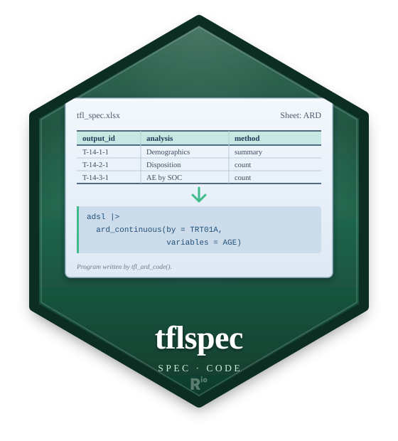

Drafting tables' code spec with an AI chat
Source:vignettes/articles/ai-table-drafting.Rmd
ai-table-drafting.RmdWith the tflplanner app: its AI drafts tab runs this flow on screen – the requests written from the TOC and the shells, the agent’s chat, the check, and the copy into the study – and its AI sample makes a fictional study to try it on. See Drafting the SPEC with an AI agent (the editors and the models recommended are there too).
Drafting tables’ code spec with a coding agent
1. What it does
From a study’s TOC/SHELL workbook and its
ADaM (XPT), a coding agent (GitHub Copilot’s agent in
VS Code, and the like) drafts each table’s code spec
(ai/spec/outputs/<id>.yml): it asks you in
its chat what defines a report and is not settled, keeps your
answers as the study’s decisions, and writes each report’s skeleton –
nothing of the look. tflspec checks the drafts and makes the
RTF; you finish them in tflplanner’s builder and adopt
them. Everything runs in R on your PC; tflspec sends nothing.
Japanese: tflspec-ai-table-guide-ja.md in the same
folder (system.file("ai", package = "tflspec")).
Recommended AI setup
| Level | Setup |
|---|---|
| Verified | The Claude desktop app’s Code tab (Claude Code) with Opus or Fable. VS Code + GitHub Copilot (agent mode) with Fable, run on a company PC on 2026-11-02. |
| Expected to work, not yet tested | VS Code + Copilot with Opus (Opus was tested on Claude Code only).
The Claude Code extension for VS Code (the same engine as the Code tab;
not separately verified). Cursor and other agent tools that can read and
write files in the study folder and run Rscript: follow B’s
flow. |
| Not verified | GPT models in Copilot: do not treat them as equivalent to Opus or Fable. |
| Not recommended | Sonnet and Haiku. In the trials Sonnet decided a rule that changes the numbers wrongly (a shift table’s “worst” value, 2 of 3 runs) and broke the kit’s rules; Haiku asks well but its repairs are guesses. |
Choose a plan where Opus or Fable can be selected.
Requirements: 1. Open the study’s ai folder as the
workspace, so that the agent works inside it alone (VS Code:
ai/<study>.code-workspace, section 5 step 1). 2. The
agent can run Rscript in the terminal. If it cannot, you
run Rscript run.R <request> from the study folder and
type c. 3. VS Code + Copilot, in Settings (Ctrl+, and
search the name) (VS
Code AI settings): -
github.copilot.chat.summarizeAgentConversationHistory.enabled:
on (the default); - chat.agent.maxRequests: raise it from
25 to, for example, 1000; -
chat.tools.terminal.autoApprove: add
"/^Rscript /": true; - if a setting is locked by your
organization, ask IT. 4. Check these on your PC before a real study
(“Before you start on the company PC”, at the end).
A. The Claude desktop app, Code tab
- Open the Code tab. Under the prompt box, click the project folder
control and choose the study’s
aifolder (the one withagent_prompt.md). - In the model picker (under the prompt box), choose Opus or Fable.
- Paste the text of
ai/agent_prompt.mdas the first message. - Answer its questions in the chat. At each stop reply
c(the next request), a number such as5(the next 5 together) ora(all the rest). - Allow
Rscriptwhen it asks the first time, so that it builds and checks. - When it says it is stuck, do what its message says, then type
c.
B. VS Code, with GitHub Copilot (agent mode) or the Claude Code extension
- Double-click
ai/<study>.code-workspace(or File > Open Workspace from File), as section 5 says. - Open the chat. In Copilot choose the Agent session control and the language model (Fable verified; Opus expected). In the Claude Code extension, click the model name at the bottom of the prompt box.
- Copilot only: set the three settings of requirement 3 (Ctrl+, and search each name).
- Then as in A: paste
ai/agent_prompt.md; answer;c/ a number /a; when it is stuck, follow its message.
2. What goes where
mystudy/
TOC_SHELL.xlsx your TOC and shells (one workbook)
adam/ adsl.xpt, adae.xpt, adlb.xpt ...
AGENTS.md written by tflspec, at the study root: "read ai/AGENTS.md" (step 3)
ai/AGENTS.md written by tflspec: the agent's instructions (step 3)
ai/requests/ written by tflspec: one file a request (step 3)
ai/decisions.md your answers from the chat, one line each (step 5)
ai/spec/outputs/ the agent's drafts, one file a report (step 5)
ai/repairs/ written by tflspec: what to paste back (step 6)Install once (a new R has no remotes; broom
is what cardx’s confidence intervals need):
# tflplanner's article installs the same list
install.packages(c("remotes", "cards", "cardx", "haven", "broom", "broom.helpers", "parameters", "dplyr", "tidyr", "readxl", "officer", "ggsurvfit", "patchwork"))
ref <- "ai-test-2026-11-09" # the trial's tag; use the one you were given
remotes::install_github(paste0("ichirio/rtfreporter@", ref), upgrade = "never")
remotes::install_github(paste0("ichirio/tflspec@", ref), upgrade = "never")
remotes::install_github(paste0("ichirio/tflplanner@", ref), upgrade = "never")Use the tag you were given (or next for the development
version). To try the flow on a ready sample first:
tflplanner::create_ai_sample_study() (see tflplanner’s AI
article).
3. What to run
library(tflspec)
r <- tfl_ai_prepare("mystudy", "mystudy/TOC_SHELL.xlsx", adam = "adam",
study_id = "ABC-123", language = "Japanese")
r # sheets, shell sheets, requests; then "Next:" linesOne call does the steps: the study folder when there is none
(study.yml, spec/data.yml,
spec/defaults.yml; an existing study.yml is
kept, so the call can be run again), the ADaM summary
(ai/adam_summary.md: the variables, their labels and short
value lists – no records), the workbook read
(ai/toc_shell.md), the requests
(ai/requests/<request>.md, one a report by default:
T-14-1-1.md …; size = 3 groups a family’s
reports, demographics-1.md, ae-1.md …;
ai/requests/index.md lists them), what every request would
repeat written once (ai/instructions-table.md,
ai/instructions-figure.md, ai/templates.md),
and the agent’s files: ai/AGENTS.md (its instructions: what
it reads, how it asks, what a draft holds), AGENTS.md and
.github/copilot-instructions.md (at the study root, and
again in ai/; short: read ai/AGENTS.md, which
is the one the agent follows), run.R,
ai/decisions.md and ai/agent_prompt.md (its
one message). A figure of the TOC is a request of its own
(figure-1.md …): its shell, and a figure report to draft.
The steps one at a time: tfl_ai_study_init(),
tfl_ai_adam_summary(), tfl_ai_read_shell(),
tfl_ai_write_requests().
The TOC and the shells in workbooks apart:
tfl_ai_prepare("mystudy", "TOC.xlsx", shells = "SHELLS.xlsx", ...);
another workbook later (the listings, a book of PK figures): the same
call with add = TRUE – the requests and drafts there are
kept, the new requests added beside them.
Check before the first request:
| Look at | Why |
|---|---|
spec/data.yml |
the analysis sets (one per ADSL flag SAFFL,
FASFL …): the agent names them by id |
r$toc |
the reports found; a TOC sheet not found:
tfl_ai_prepare(..., toc_sheet = "Index")
|
r$toc$shell |
NA = no shell sheet found:
tfl_ai_prepare(..., sheets = c("DM shells", ...))
|
ai/adam_summary.md |
no records, but short value lists (up to 15): remove what your company does not allow |
ai/AGENTS.md |
what the agent may read and must ask; study.yml’s
ai: keys change its rules (below) |
The sheets’ report numbers. Before the requests are
written, check which numbers each shell sheet makes:
tfl_ai_prepare(..., dry_run = TRUE)$numbers has a row a
number a sheet writes (or its name has) – sheet,
number, title, toc_id (the TOC
item, NA none), make (made a report of that
sheet’s request), source, reason (for a guess,
how the number matches the sheet; "set by the person" for
one you gave or saved; NA for the rule’s). A number written
only as a reference (“see Table 14.2.1”) is made by the rule too:
correct it with
numbers = data.frame(sheet = "t14.1.1", number = "Table 14.2.1", make = FALSE)
(reference only: the request still shows it), or
numbers = list(t14.1.1 = "Table 14.1.1") (the numbers the
sheet makes; its others reference only). A number no TOC item has, made
TRUE, is a report all the same (with a warning). A TOC item
no sheet writes or names whose number (with a part letter:
Table 15.2.4.2.b) one sheet writes is made that sheet’s
report (source "guess"); written in two
sheets, it is a candidate of each. The correction is saved as
ai/sheet_numbers.csv when the requests are written (a dry
run saves it too once the study’s ai/ folder exists, and
makes nothing else), and used by the next calls until
numbers is given again.
The agent’s rules are study.yml’s
ai: keys (the study standard’s
spec/defaults.yml may say them first;
study.yml wins):
ai:
language: ja # the chat's language ("en" by default)
run: one # "one": one request, then a menu; "batch": all the requests, the questions at the end
requests_per_chat: 0 # stop after this many requests and ask for a new chat (0: no limit)
carry: [all, dataset, section] # which decisions apply to a later report without asking
max_rounds: 3 # one item asked again at most this many times, then marked to confirm
footnotes_at: footer # where the shell's footnotes go: "footer", or "table"
review: {figure: 3, table: 2, listing: 1} # how deep the agent checks what it built: 0-3, or none4. What the agent reads
| Reads | Never |
|---|---|
the request it is given and the files it names:
ai/instructions-*.md, ai/templates.md,
ai/adam_summary.md, spec/data.yml,
spec/defaults.yml, ai/decisions.md,
ai/reference/ (the company’s conventions and hints, when
there are any) |
the XPT files, or any data with records: subject ids, dates, results; other folders, other files |
Use the AI your company approves for the study’s data: the agent is
sent the ADaM’s summary, not the data. AGENTS.md says what
it may open; with
tfl_ai_prepare(..., agent_reads = c("workbook", "adam")) it
may also read the workbook (the place a request names, when a shell’s
text looks cut) and the ADaM (a variable’s values, never a data file in
the editor), with whatever tool the PC has; docs = gives it
documents (a SAP, a data guide), copied into ai/docs/. It
installs nothing. It runs one command,
Rscript ../run.R <request> (from ai/,
its workspace), to build what it drafted and check it (section 7).
Each request is a few thousand characters: the agent’s steps, the
decisions that apply to its reports, its reports’ TOC rows and shells,
and the names of the files to read. A request longer than
max_chars is split.
5. The agent’s questions, your decisions, its drafts
- Open the study’s
aifolder in VS Code – double-clickai/<study>.code-workspace(<study>is the study folder’s name, hereai/mystudy.code-workspace): the agent sees that folder alone, notspec/, the programs or the data – and give the agent’s chat the text ofai/agent_prompt.md, once. With the defaultrun: oneit starts with ONE request ofai/requests/index.md, then stops at a menu where you choose how to go on; withrun: batchit takes the requests together (see How the agent works through the requests (run), below). - The agent asks you, numbered, what defines each report and is not settled – the analysis set, a parameter, the treatment variable, the denominator of a percent, what is counted, missing values, a subgroup’s condition – each question saying the report’s id and title, the choices and its default. Answer in the chat; “default” takes its default. It asks again when an answer does not settle the item, three times at most; then it takes the likeliest choice and marks it to confirm.
- It records your answers in
ai/decisions.md, one line a decision (- D1 [all] treatment_var.SAF: TRT01A (chat, T-14-3-1)), and applies them to the reports after – without asking when it is sure the decision holds (its scope isall, or the report’s dataset or TOC section, ascarrysays), asking “the same here?” when it is not. You can write lines of your own there before it starts (a line without a scope isall). - It writes each report’s skeleton as
ai/spec/outputs/<id>.yml:id,kind,label,population,data,ard(the analysis data, the analyses), the content (a template where one fits, elsetable_planandplan_cells), the digits when the shell shows them,plan_columns: {widths}(from the shell’s proportions),page: titlesand the shell’s footnotes (footnotes_at) – and underai:, itsassumptions(eachfrom: D<n>) and what is toconfirm. No header rows, pages, borders or fonts: the study’s defaults and your builder do those. Then it goes on asrunsays (below). - With
run: oneit stops after each request, at the menu (seerun, below). When every request is done it stops and tells you the files written, the decisions added and what is to confirm. Check them (step 6). You can stop it between requests and say “c” (or “continue”) later: it goes on fromai/progress.md, your decisions kept.
A question about the work rather than a report (a file missing, a request unclear) it asks in the chat too.
How the agent works through the requests (run)
study.yml ai: run says how the agent
starts; the default is one. -
one (default): the agent takes ONE
request: its questions in the chat, its drafts, its build and check.
Then it stops at a menu: c = the next request, a number =
the next N together (e.g. 5), a = all the rest
together. Use it to try a request and check it, then answer
a to send the rest in one go. (続ける,
次, continue also mean c;
全部, all mean a.) -
batch: everything at once, with one round
of questions at the end. The agent takes its default for every question,
notes the question in ai/questions-end.md (a section for
each batch), builds and checks everything, and asks all of them in
one message. You answer only what you want changed;
only the reports that cite a changed answer are written and built
again.
Each request is processed on its own, and everything goes into files
as it goes (the drafts, ai/decisions.md,
ai/questions-end.md, and the row of
ai/progress.md, the work queue). If the agent’s chat is
summarized or fails, it goes on from those files. Whether an earlier
decision holds for a report is judged by that report, when it is
processed.
Read every default, not only the questions: the defaults can
differ from run to run. ai/defaults.md (written by
run.R’s first build) lists them, the most important first
(what changes the numbers, then the rows and statistics, then the text
and the look); its first section lists the defaults the agent chose
itself, merged by topic, and a batch’s end message posts that section’s
first two groups in full, with the count of the rest. Change one the
same way as an answer (D<n>: ... or
<report> <item>: ...).
How long (estimates)
| Way | Study | Questions come | Agent’s run | Your question time | After your answers |
|---|---|---|---|---|---|
| one, then “all the rest” | 1 shell / 2 reports | after about 1 min (that request’s) | about 5-6 min | a few min | the build, about 2-3 min |
| one, then “all the rest” | 50 shells / 100 reports | first request: after about 1 min; then one batch after about 5 h | about 5 h | about 20-40 min | about 1-2 min a changed report |
| batch | 50 shells / 100 reports | one batch after about 5 h | about 5 h | about 20-40 min | about 1-2 min a changed report |
Estimates; they will be updated from a 24-report test.
For a long run, raise VS Code’s chat.agent.maxRequests
(25 by default: the agent pauses for “continue?” after 25 steps) and let
Rscript run without asking:
chat.tools.terminal.autoApprove: {"/^Rscript /": true}.
VS Code summarizes a long chat by itself; the agent goes on from
ai/progress.md. Set ai: requests_per_chat to
stop after that many requests instead.
6. Check the drafts, write the YAML, make the RTF
res <- tfl_ai_collect_answers(".") # read the drafts, check, write them anew
res # each request: its status, reports and next steptflplanner’s “Check” does the same. Each request’s drafts are read as
its answer and checked against the request – the schema, the analyses,
every dataset and variable against the ADaM summary, the study’s files –
and written anew: the column widths filled, the assumptions numbered
(spec/_assumptions.yml), the ai: block kept.
The print gives, for each request, its status (ok,
warning, error, no answer), its
reports and the next step, then the first problem of
each report. A draft with errors is left as it is; its repair prompt is
ai/repairs/<request>.md. Paste it into the
agent’s chat: it fixes the draft; then run
tfl_ai_collect_answers(".") again (2-3 rounds are usual). A
draft whose YAML cannot be read is refused with why: tell the agent, it
fixes the form. An assumption that is wrong
(spec/_assumptions.yml, tfl_ai_assumptions()):
tell the agent in the chat what is right, or change the draft in the
builder.
tfl_ai_confirm(".") lists what the agent marked to
confirm (the report, the item, why): decide those in the builder. They
do not stop a draft from being adopted; tfl_check_spec()
shows them as check rows until they are decided.
The print counts the reports, and ai/manifest.csv lists
every one with its status: check the count against the TOC (one TOC row
can be several reports).
Then the RTF of every report written:
tfl_ai_run(".") # check again, then each report's ARD and RTF: ai/output/tfl/<id>.rtfIt writes ai/status.md (each report: its status, its RTF
or why none, the next step). One report’s failure does not stop the
others. Rscript run.R does the same from the command
line.
| Function | Does |
|---|---|
tfl_ai_prepare() |
the study folder, the ADaM summary, the workbook read, the requests, the agent’s files |
tfl_ai_write_requests() |
one file a request (size, max_chars) |
tfl_ai_collect_answers() |
reads ai/spec/outputs/, checks each request’s drafts,
writes them anew |
tfl_ai_confirm() |
what the agent marked to confirm |
tfl_ai_run() |
checks, then each report’s ARD and RTF;
ai/status.md
|
tfl_ai_adopt() |
a checked draft into the study’s spec/outputs/
|
tfl_ai_compare() |
one row a report: drafted with a template or a code SPEC, its
values, check, repairs (ai/compare.csv) |
tfl_build_ard() |
the ARD; one report at a time to find an error:
output_id = "T-14-1-1"
|
tfl_content_run(), tfl_report()
|
the table and its page → RTF |
Read spec/_assumptions.yml: what the
agent took from a decision (from: D<n>) or, after
three rounds, on its own. tfl_content_code(o) and
tfl_ard_code(st, output_id = id) show the code.
A draft you have checked is adopted with tfl_ai_adopt():
copied to the study’s spec/outputs/, where the report list
shows it (the agent never writes over what was adopted). The folder
opens in tflplanner as a study (its spec/toc.yml lists the
reports). A study of the form before (its drafts in
spec/outputs/) moves with
tfl_ai_migrate().
7. The agent builds and checks its own drafts
After a request’s drafts, the agent runs
Rscript ../run.R <request> from ai/ (its
workspace; you run Rscript run.R <request> from the
study folder). R checks the drafts, builds the ARD and the RTF and draws
the figures. R reads the ADaM; the agent does not.
Beside each RTF in the output folder (ai/output/tfl/
when the drafts are apart, as here; a figure’s PNG is there too) R
writes:
-
<id>.R, the report’s program; -
<id>-facts.txt, what came out, in words. A table’s: its header, its rows, the empty cells, then its pages (the lines used against what a page holds, the page header and footer). A figure’s: its labels, axes, legends and layers.
The agent reads them against the shell, fixes the draft and builds again: two fixes at most. Then a figure is drawn with its own ggplot2 code, or a table keeps its draft and the difference is marked to confirm.
The review depth, by kind of report:
| Level | The agent reads |
|---|---|
0 |
the check: ai/status.md, the repairs |
1 |
+ the program (<id>.R) |
2 |
+ the facts (<id>-facts.txt) |
3 |
+ the output: a figure’s PNG, a table’s pages |
none |
it does not build that kind; you run run.R
|
The defaults are figures 3, tables 2 (the pages too when a table runs
over one page) and listings 1. Set them in study.yml:
ai: review: {figure: 3, table: 2, listing: 1}; the study
standard’s spec/defaults.yml may give the company’s
default. After changing them, write the agent’s instructions again:
tfl_ai_refresh_agents(".") # AGENTS.md again from study.yml; drafts and decisions are keptIn tflplanner, the AI tab’s selects do the same.
Measured on the sample study: a run of 5 reports took 110-120k tokens at every level, so the depth costs little.
When the agent cannot run R (the terminal is refused, or R is not
found), it says so and asks you to run
Rscript run.R <request> from the study folder (or
tflplanner’s AI tab). Then it reads the same files.
8. The company’s hints from past TFLs
The company’s reports have a look of their own. The agent can learn it from your past RTFs and keep it as hints for every study.
The company’s AI folder is the option tflspec.ai_home
(tflplanner sets it to <home>/ai):
ai/ the company's AI folder
past_tfl/ your past RTFs, a subfolder a study
AGENTS-learn.md written by tflspec: the agent's task (step 2)
learn/ written by tflspec: what R read from the RTFs
company_hints.yml written by the agent: the hints (step 4)
reference/ the company's conventions, if you have themWithout tflplanner, set the folder first:
options(tflspec.ai_home = "C:/.../company-ai") (or give
dir = to each call).
Copy past RTF tables into
past_tfl/. Use only files you may show the agent.-
Run
tfl_ai_style_prompt(standard = <the company standard>). The standard is a data frame ofkind,key,value. Without a standard it still works.options(tflspec.ai_home = "C:/.../company-ai") std <- data.frame(kind = c("all", "demog", "ae_soc_pt"), key = c("font", "n_form", "first_row"), value = c("Courier New 9 pt", "(N=xx)", "Any TEAE")) tfl_ai_style_prompt(standard = std)The kinds: all, demog, ae_soc_pt, ae, param_change, shift, listing, figure, other. The keys: rules, spanner_rule, stub_ratio, font, orientation, titles, footnotes, n_form, categorical, zero, continuous, digits, stub_heading, first_row, sort.
Open the AI folder in VS Code and give the agent
AGENTS-learn.md.The agent writes
company_hints.yml: the features of this company’s reports by kind, with how many files show each. Where the files differ from the company standard, it lists them underconflicts:and never writes them as hints.Read it with
tfl_ai_style_read(). No one adopts it line by line.
Every study prepared afterwards gets a copy in
ai/reference/. A study prepared before gets it with
tfl_ai_refresh_agents(".").
What the study’s agent settles first, in this order:
- the shell, the SAP, the study’s documents and the standard;
- the hints (
from: "company hints"; a hint seen in fewer than half the files is marked to confirm); - the usual convention;
- a question to you.
The hints never override the shell, the SAP or the standard.
A whole study (up to ~200 tables)
Start small: one request of each family (
T-14-1-1,T-14-3-1…), and check its RTF against the shell.-
Fix one table of each family by hand, then write the requests again with them as examples, named by family – each request gets its own family’s, and the agent follows it.
tfl_ai_write_requests()takesexamples;shellandadamare made astfl_ai_prepare()makes them:tfl_ai_write_requests("mystudy", tfl_ai_read_shell("mystudy/TOC_SHELL.xlsx"), tfl_ai_adam_summary("mystudy/adam"), examples = c(demographics = "spec/outputs/T-14-1-1.yml", ae = "spec/outputs/T-14-3-1.yml"), overwrite = TRUE) Check as it goes:
tfl_ai_collect_answers(".")reads the drafts written so far;size = 3to5groups a family’s reports in one request, their questions asked together.Your decisions carry: a decision of scope
allor a dataset holds for every report after; the agent asks once a family, not once a report.tfl_ai_collect_answers(".")any time: it reads every draft there and lists what is left (no answer,error, to confirm).
Templates or the code SPEC (templates)
By default (templates = TRUE) each request asks the
agent to draft a report with one of the study’s templates where one fits
(template: {name, args}, only the arguments that differ
from the default, and the report’s own content items for what the
template does not do), else as a code SPEC. ai/templates.md
lists the templates registered when the requests were written –
tflspec’s, the company’s, the study’s variants – with their arguments,
and each request names the ones likely for its reports.
templates = FALSE: the code SPEC only. The setting is a
line near the top of each request
(<!-- templates: TRUE -->) and
ai/status.md’s. tfl_ai_compare() says, a row a
report, which was used.
Try it on the sample (10 minutes)
This is tflspec’s own oncology sample (5 reports, the drafts stored with it). tflplanner’s AI tab has a different sample, study DMY-001 (8 reports, drafted by the agent): see its article.
The files that come with tflspec: a TOC/SHELL workbook of four tables
and a Kaplan-Meier figure, the sample ADaM as XPT, and a stored draft
for each of its five reports (what an agent wrote). The installation is
ready when the last line prints ok for all five
reports.
library(tflspec)
d <- file.path(tempdir(), "sample-study")
dir.create(file.path(d, "adam"), recursive = TRUE, showWarnings = FALSE)
for (x in c("adsl", "adae", "adrs", "adlb", "adtte")) {
df <- getExportedValue("tflspec", x)
for (v in names(df)) if (is.factor(df[[v]])) df[[v]] <- as.character(df[[v]])
haven::write_xpt(df, file.path(d, "adam", paste0(x, ".xpt")))
}
ex <- system.file("ai", "example", package = "tflspec")
r <- tfl_ai_prepare(d, file.path(ex, "onco_toc_shell.xlsx"), adam = "adam",
study_id = "XYZ-ONC-01", size = 3, overwrite = TRUE)
# the stored drafts stand in for the agent's: one a report
invisible(file.copy(list.files(file.path(ex, "drafts"), full.names = TRUE),
file.path(d, "ai", "spec", "outputs"), overwrite = TRUE))
tfl_ai_collect_answers(d) # 5 reports in 4 requests (the figure its own): ok 5 ...Keep the ai/ folder (requests, decisions, drafts) –
share it only within your company.
Before you start on the company PC
-
- If it may not, or VS Code asks every time, the build-and-check step
falls back to you running
Rscript run.R(section 7). - If
Rscriptis not found,AGENTS.mdgives the PowerShell form that finds R’s ownRscript.exe.
- If it may not, or VS Code asks every time, the build-and-check step
falls back to you running
When it does not work
| What you see | Do |
|---|---|
r$toc is empty: the TOC sheet was not found |
tfl_ai_prepare(..., toc_sheet = "<the TOC sheet's name>") |
r$toc$shell is NA: no shell found by the
report’s number |
add that sheet:
tfl_ai_prepare(..., sheets = c("<shell sheet>", ...))
|
| the agent writes a draft without asking, or asks what a decision settles | its AGENTS.md was changed or not read:
tfl_ai_prepare(..., overwrite = TRUE) writes it again; open
the study’s ai folder in VS Code
(ai/<study>.code-workspace) |
error, “the YAML cannot be read”, in
tfl_ai_collect_answers()
|
tell the agent: it fixes the file’s form
(ai/spec/outputs/<id>.yml) |
| “Not read (no request asks for them)” | a draft named after no report of the TOC: the ids are in
ai/requests/index.md
|
| The shells as text look wrong (cells missed or out of order) | let the agent read the workbook:
tfl_ai_prepare(..., agent_reads = "workbook") – each
request then says where its shells are in the file |
print(r) ends with “Next: no TOC found” or “no shell
found” |
pass what it names: toc_sheet = "<sheet>" or
sheets = c(...)
|
| the same error after 2-3 repairs | correct ai/spec/outputs/<id>.yml by hand (or in
the builder), then run step 6 |
tfl_build_ard() stops:
The package "broom" (>= 1.0.8) is required.
|
install.packages("broom") (another package named so:
install it too) |
tfl_build_ard() stops |
find the report:
tfl_build_ard(st, dir = ".", output_id = "T-14-1-1", save = FALSE)
|
| The agent says R cannot be run | run Rscript run.R <request> yourself, from the
study folder, then tell the agent “done” |
| The agent stops and says it is stuck | do what its message says (/compact, a new chat with
ai/agent_prompt.md, or allow Rscript), then type
c; it resumes from ai/progress.md
|
<id>-facts.txt says a table runs over a page |
the builder sets the pages; the agent marks it to confirm |
AGENTS.md still shows the old review levels |
tfl_ai_refresh_agents(".") |